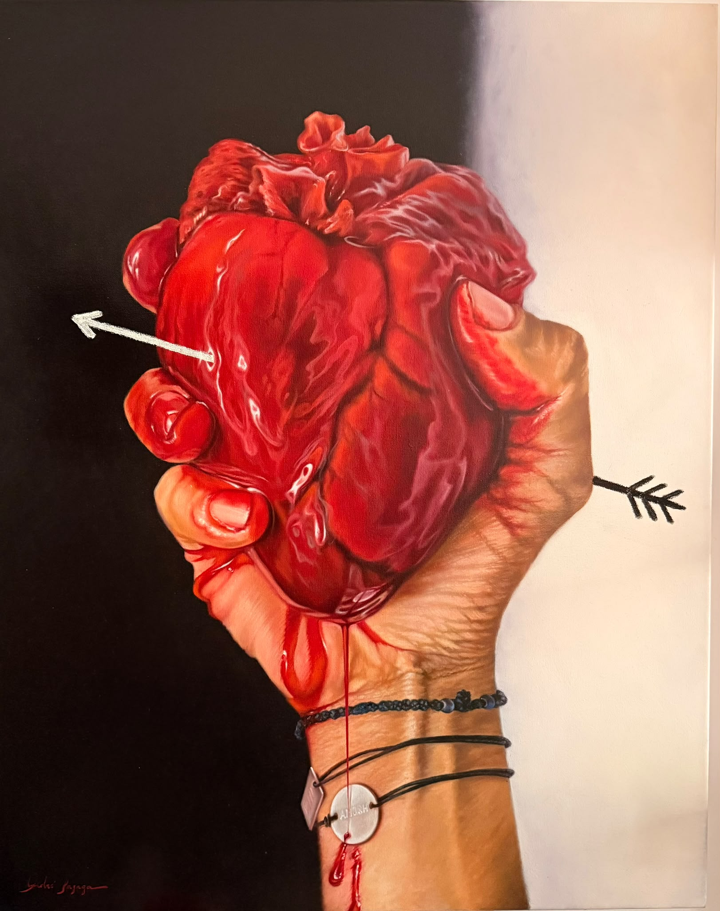

André
Bazaga
Casita blanca · · 60 × 80 cm · 2026
Casita blanca · 60 × 80 cm · 2026

Cupido · 92 × 73 cm · 2024

Me quita el aire · 92 × 73 cm · 2024

Eden · 60 × 60 cm · 2026

Eden II · 60 × 60 cm · 2026

Mediterráneo · 80 × 60 cm · 2026

The munchies · 40 × 40 cm · 2026
info@andrebazaga.com
+34 608 80 97 45
andrebazaga.com